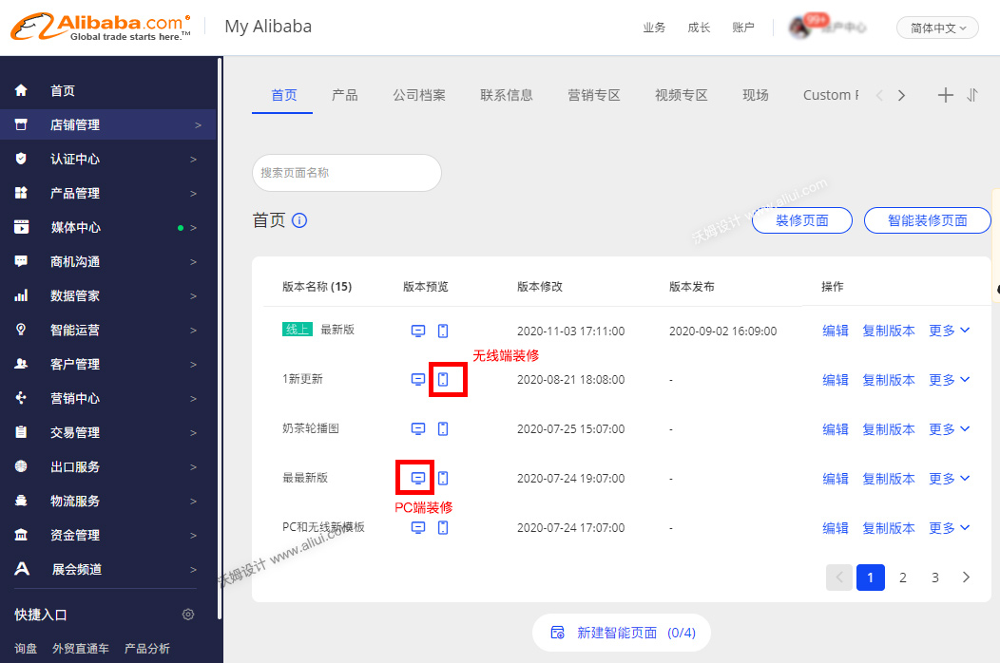
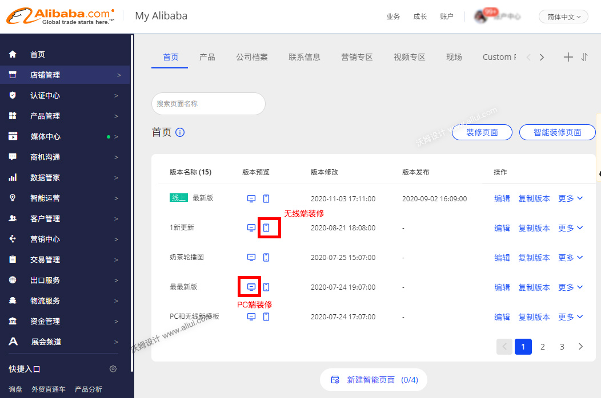

不同步问题原因
商家在设置好店铺装修后发布PC端，看不到无线端装修的内容，发布了无线端内容看不到PC端的装修内容。原因主要是装修的页面分别装修在了2个页面导致的（此操作和流程跟模板没关系，无论是使用模板和不使用模板装修在2个页面都会导致此问题）
解决办法：
不同步的情况只能选择其中一端重新再装修设置一遍，具体看无线端和PC端哪个装修节省时间，选择哪个重新装修。

 更新：沃姆设计
更新：沃姆设计
商家在设置好店铺装修后发布PC端，看不到无线端装修的内容，发布了无线端内容看不到PC端的装修内容。原因主要是装修的页面分别装修在了2个页面导致的（此操作和流程跟模板没关系，无论是使用模板和不使用模板装修在2个页面都会导致此问题）
不同步的情况只能选择其中一端重新再装修设置一遍，具体看无线端和PC端哪个装修节省时间，选择哪个重新装修。